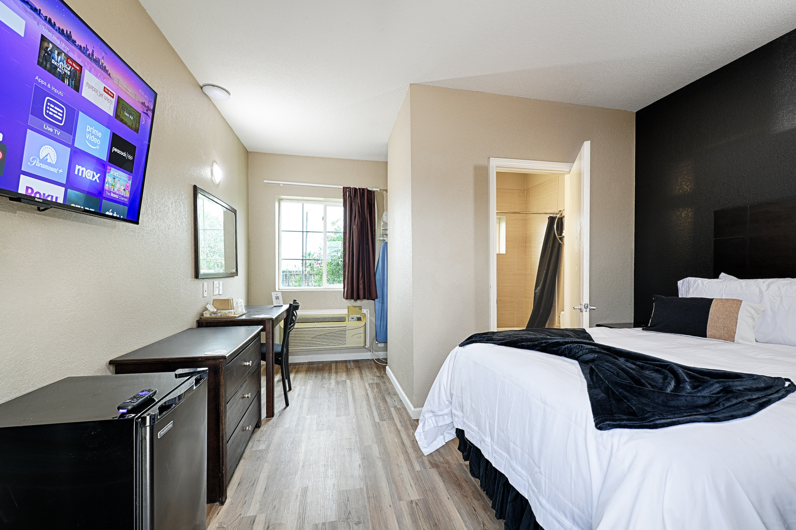

Furnished Room
Renovated furnished rooms are available in Dilley, Texas.
For a short trip to Dilley, Hotel Dilley is a furnished apartment-style option to compare when you want a simple room setup and flexible stay timing.
Short Trip Basics
A basic apartment-style stay can make sense when you need something simpler than a full lease but more practical than guessing from a generic hotel listing.
Renovated furnished rooms are available in Dilley, Texas.
Flexible nightly and longer-stay options are offered.
Some rooms include kitchenette facilities. Ask which room type matches your needs.
What To Compare
Use this checklist before deciding whether Hotel Dilley fits your short trip.



Questions People Ask
Yes, it can be compared for that use case because renovated furnished rooms and flexible stay options are offered.
Some rooms include kitchenette facilities. Ask which room type is right for your stay.
No. Call Hotel Dilley to discuss current room fit, terms, and availability.
Call Hotel Dilley to compare room type, kitchenette needs, and flexible stay options.